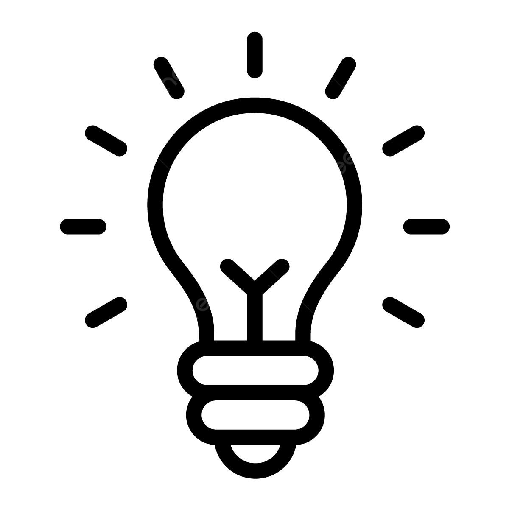

Menu
Accueil
Menu

Vous pouvez naviguer à travers les differentes rubriques à l'aide du menu en haut de page.
Actuellement étudiant en première année dans la section
PEI
(Parcours École d'Ingénieurs) au sein de l'ENSIBS de Lorient.
Je souhaite entrer en 2027 dans le parcours Cyberdéfense
de l'ENSIBS à Vannes. Cette formation se déroule obligatoirement en altérnance et je considère cela plus comme une opportunité plutôt qu'une contrainte.
En effet, j'héstime que la manière d'apprentissage la plus adapté pour moi est le travail pratique. Avoir la chance de pouvoir m'intégrer dans une entreprise afin de développer des compétences utiles au métier d'ingénieur est donc pour moi un très grand objectif.
Je vise donc l'obtention du diplôme d'Ingénieur en Cyberdéfence d'ici 2030 ce qui me permettrai d'exercer la proffession qui m'attire depuis la classe de seconde.
Je mets beaucoup d'attention afin de maximiser mes chances auprès des entreprises. Cela se traduit par mes différents travaux saisonniers, ma recherche active de stage dans le domaine de l'informatique ou de la cybersécurité, mais également la validation de ma période internationale.
Je réalise dès la fin de ma première année de PEI 5 semaines d'activité à l'étranger.
Au terme de mes 2 années de classe préparatoire j'aurais donc accompli les 9 semaines de "Mobilité Internationnale" requise pour valider mon diplôme d'ingénieur. Étant donné que je souhaite exercer de l'altérnance lors de mes 3 années de cycle ingénieur, cela me dispensera d'entrecouper mes période en entreprise par des périodes à l'étranger.
None
None
None